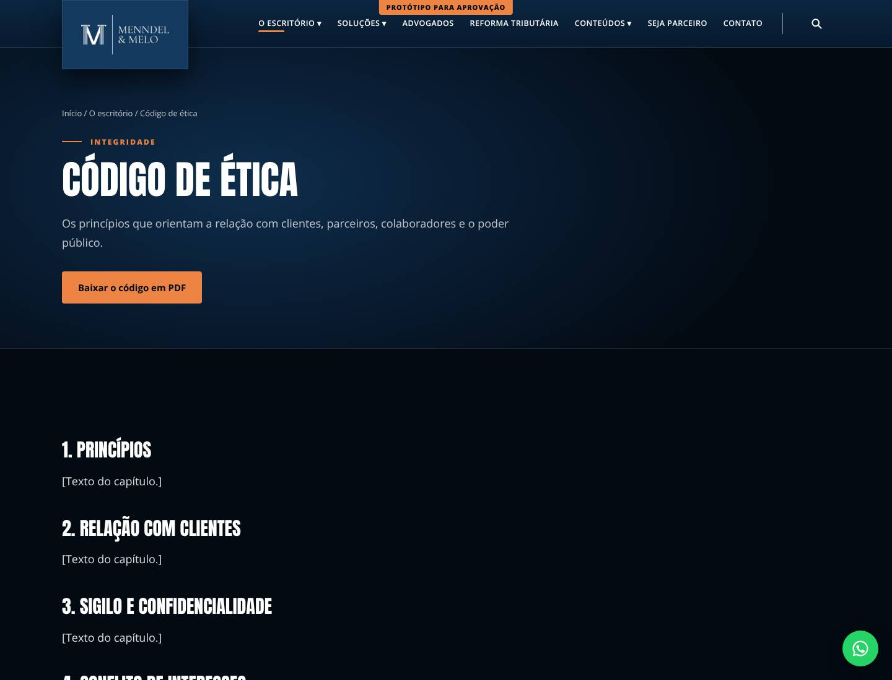
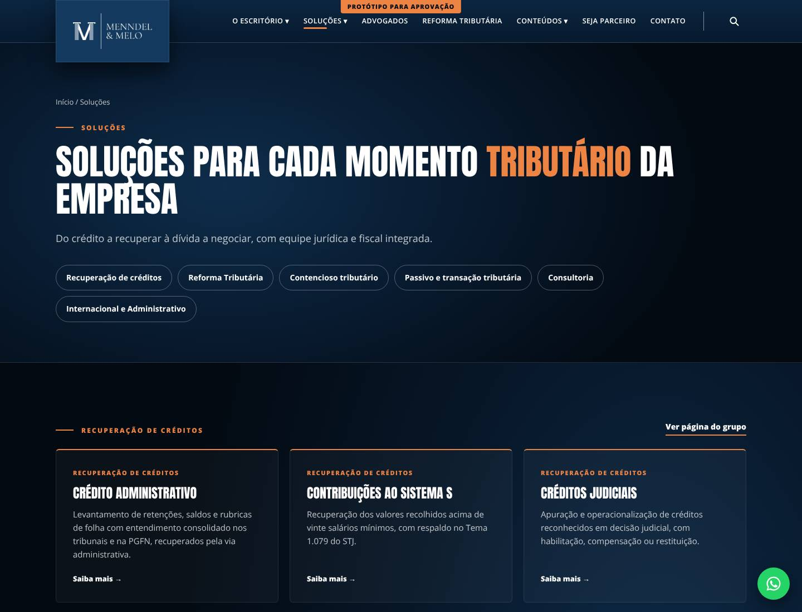
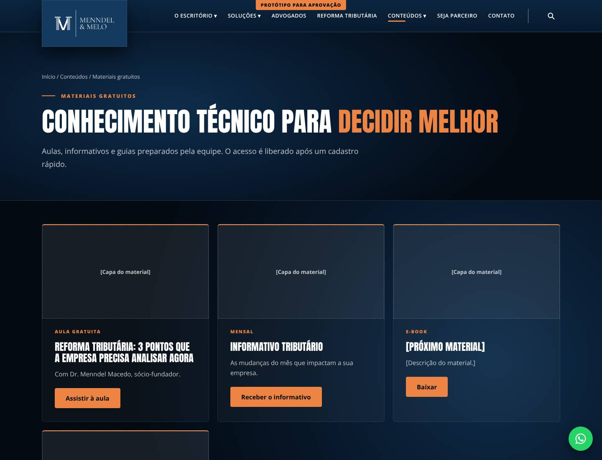
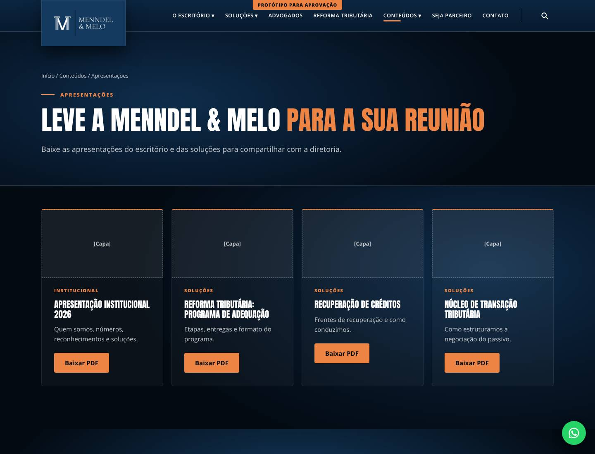
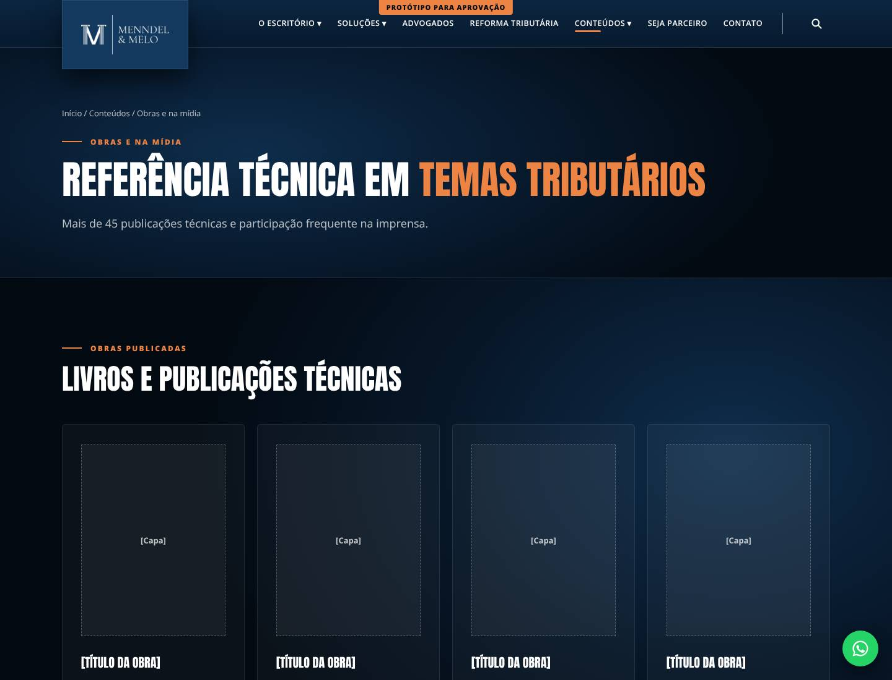
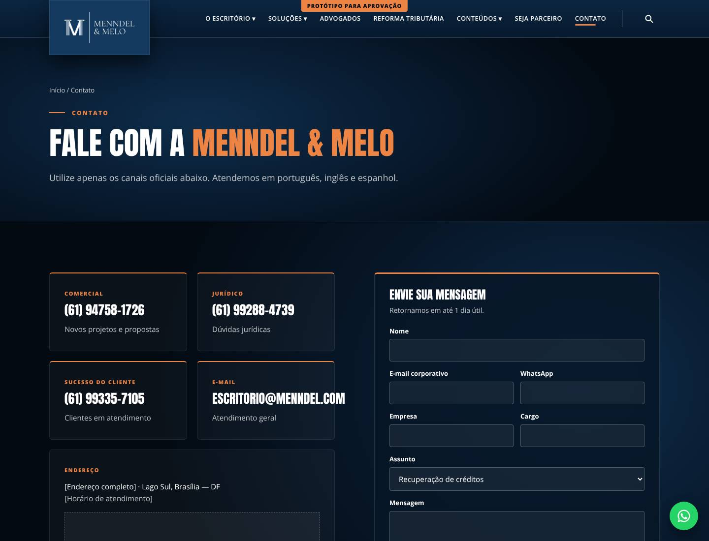
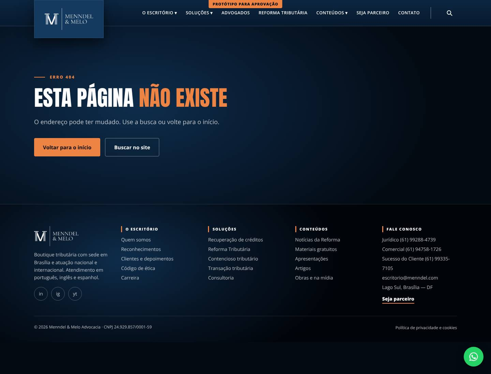

Principal
O escritório
04
Clientes e depoimentos
Empresas e entidades atendidas e o que dizem sobre o trabalho do escritório.

Soluções

07
Recuperação de créditos
Modelo de página de grupo de soluções, com formulário de contato.
Capta leadAdvogados
Reforma Tributária e conteúdos

13
Materiais gratuitos
Aula, informativo mensal e outros materiais gratuitos, com acesso por formulário.
Capta lead
14
Apresentações do escritório
Apresentações institucionais e de soluções para download, com cadastro.
Capta lead
Captação e contato

Páginas de apoio
